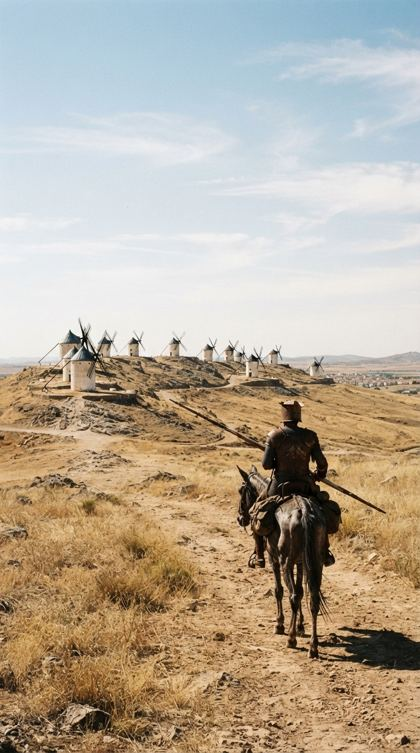
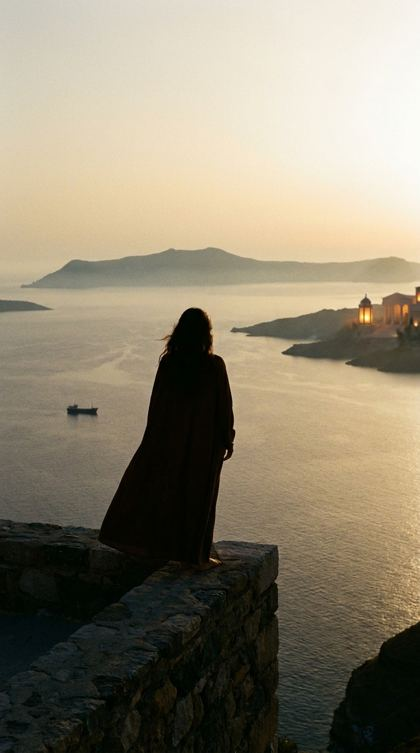
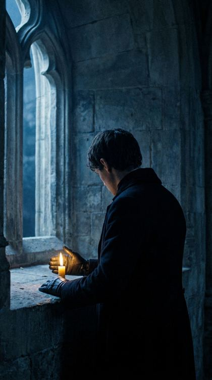
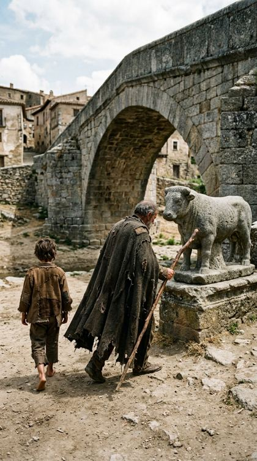
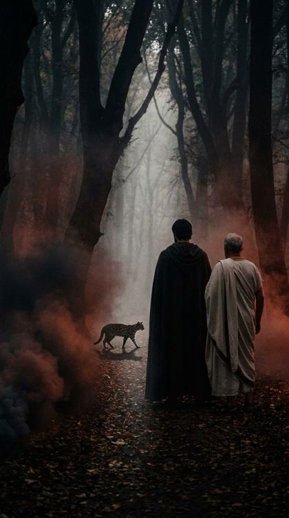

Muy pronto en Android y iPhone
Primero el reel.
Después, el libro.
Los clásicos de siempre, presentados como hoy se mira todo: en videos cortos. Si uno te tienta, das vuelta la carta, leés la contratapa y elegís cuánto tiempo le dedicás.
50 clásicos para empezar · Los videos están hechos con IA
Macbeth
Macbeth
William Shakespeare
Macbeth vuelve victorioso de una batalla cuando, en un páramo, tres brujas lo saludan con títulos que todavía no tiene y le anuncian una corona. Poco después, una de las predicciones empieza a cumplirse. Desde ese momento la ambición se mezcla con el miedo.
La isla del tesoro
La isla del tesoro
Robert Louis Stevenson
Un viejo marino de piel curtida y una cicatriz de sable llega a la posada del «Almirante Benbow» y se queda. Bebe ron, canta canciones de piratas y espera a un marino con una sola pierna. Mientras el miedo se instala en la casa, un cofre que nadie vio abierto guarda un secreto.
Don Quijote de la Mancha
Don Quijote de la Mancha
Miguel de Cervantes
Un hidalgo de casi cincuenta años, flaco y madrugador, vive en un lugar de la Mancha con su ama y su sobrina. Lee libros de caballerías de noche y de día, tanto que se le seca el cerebro y cree que todo lo que leyó es verdad. Lo acompaña un labrador vecino, Sancho Panza.
Hamlet
Hamlet
William Shakespeare
Un fantasma recorre de noche las almenas de un castillo danés, y solo un hijo se anima a escucharlo. Lo que ese padre muerto tiene para decirle empuja a Hamlet a fingirse loco, a desconfiar de todos los que lo rodean y a dudar, capítulo tras capítulo, si vale más actuar o quedarse quieto.
Romeo y Julieta
Romeo y Julieta
William Shakespeare
En Verona, dos familias se odian desde hace años, y la pelea llega hasta los criados en plena plaza. Romeo, un Montesco, sufre por un amor que no lo corresponde y huye de la luz del día. Hasta que una noche hay fiesta en casa de los Capuleto y conoce a Julieta, que todavía no cumplió quince años.
La vuelta al mundo en ochenta días
La vuelta al mundo en ochenta días
Julio Verne
Londres, mil ochocientos setenta y dos. Phileas Fogg es un caballero tan exacto que despide a un criado porque le llevó el agua de afeitar un grado más fría. Una tarde, en su club, apuesta veinte mil libras a que da la vuelta al mundo en ochenta días.
Cómo funciona
Tres pasos, sin apuro.
Mirás un reel
Cada libro tiene cuatro. Son cortos, verticales y te invitan a entrar. Si uno te deja con ganas, tocás.
Leés la contratapa
Un texto breve, sin spoilers, como el de atrás de un libro. Para decidir con calma.
Elegís cuánto tiempo le dedicás
Original, Lite o Story: el libro entero, cerca de la mitad, o la historia completa en unos minutos. Después, a leer.
Tres formas de leer
¿Cuánto libro querés hoy?
Movelo y mirá cómo cambia el grosor. Las tres formas cuentan la misma historia; cambia cuánto del autor leés.
El libro completo, tal como lo escribió el autor. Para cuando tenés tiempo y ganas de todo.
Escrita con inteligencia artificial y revisada por nosotros. La app lo indica siempre.Lite está en novelas y ensayos. El teatro, la poesía y los cuentos van de Original a Story.
Primera colección
Cincuenta clásicos para empezar.

Don Quijote de la Mancha
Miguel de Cervantes
La isla del tesoro
Robert Louis Stevenson

Odisea
Homero

Hamlet
William Shakespeare

Lazarillo de Tormes
Anónimo

La Divina Comedia
Dante Alighieri
50 libros en la primera colección · 4 reels por libro · Textos de dominio público · Imágenes y videos hechos con IA
Muy pronto
Te escribimos el día que salga.
Un solo correo. Nada de boletines.